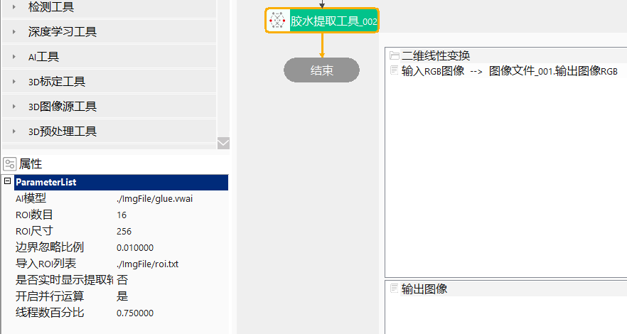
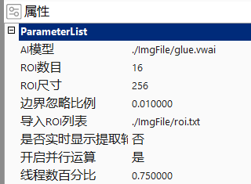
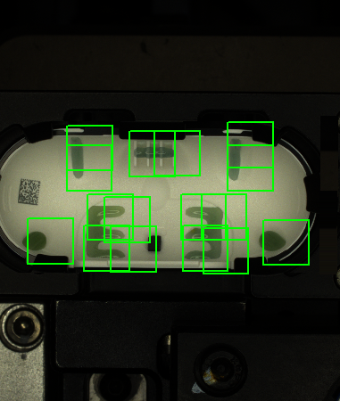

Công cụ trích xuất keo chủ yếu được dùng để trích xuất keo trong một vùng nào đó của ảnh đầu vào.



Mô hình AI
Nhập mô hình AI, định dạng là vwai.
Tỷ lệ bỏ qua biên
Tỷ lệ bỏ qua biên của vùng ROI, phạm vi giá trị là [0.01, 0.2].
Nhập danh sách ROI
Thiết lập ROI, bao gồm số lượng ROI và kích thước ROI, có thể chỉnh sửa vị trí ROI trong Edit view.
Có thể nhập danh sách ROI, sau khi nhập thành công, số lượng ROI và kích thước ROI sẽ được đồng bộ theo dữ liệu trong danh sách.
Có hiển thị contour trích xuất theo thời gian thực hay không
Có：thực thi thành công, Result hiển thị ảnh đầu vào và contour；Không：thực thi thành công, hiển thị ảnh nhị phân đã trích xuất.
Trong quá trình debug, cấu hình là ’Có‘； trong quá trình sản xuất, cấu hình là ’Không‘。
Không có
| Tên tham số | Mô tả tham số |
|---|---|
| Ảnh đầu vào | Ảnh cần trích xuất. |
| Biến đổi tuyến tính 2D | Phép tịnh tiến, xoay, co giãn của mục tiêu so với template. |
| Mô hình AI | Thiết lập đường dẫn mô hình AI. |
| Số lượng ROI | Phạm vi giá trị là [1, 50]. |
| Kích thước ROI | Phạm vi giá trị là [128, 2048]. |
| Tỷ lệ bỏ qua biên | Phạm vi giá trị là [0.01, 0.2]. |
| Nhập danh sách ROI | Đường dẫn tệp danh sách ROI được nhập. |
| Có hiển thị contour trích xuất theo thời gian thực hay không | Có：thực thi thành công, Result hiển thị ảnh đầu vào và contour；Không：thực thi thành công, hiển thị ảnh nhị phân đã trích xuất |
| Bật tính toán song song | Có bật tính toán song song hay không, khi chọn Có, thuật toán sẽ bật phương thức tính toán song song OpenMp, có thể nâng cao tốc độ tính toán, nhưng có thể xuất hiện tình trạng thời gian xử lý không ổn định；khi chọn Không, thuật toán sẽ tắt tính toán song song OpenMp. Mặc định là Không. |
| Phần trăm số luồng | Thiết lập phần trăm số luồng của tính toán song song, phạm vi hợp lệ là (0, 0.75]，tương ứng biểu thị phạm vi phần trăm (0%, 75%]，mặc định 0.75. |
| Giao diện nâng cao | Không có |
| Tên tham số | Mô tả tham số |
|---|---|
| Ảnh đầu ra | Chiều rộng, chiều cao, kích thước pixel của ảnh đầu ra. |
| Kết quả thực thi | Kết quả thực thi công cụ. |
| Thời gian thực thi | Thời gian thực thi công cụ. |
参见“\Samples\AI胶水提取工具.gvp”。